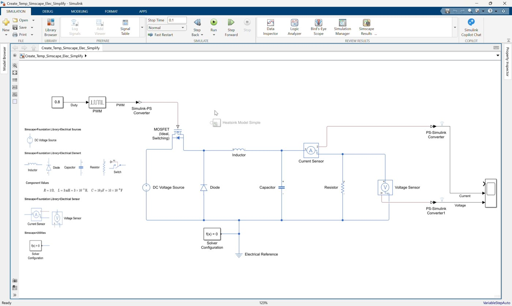
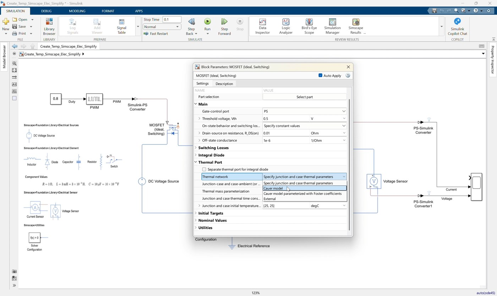
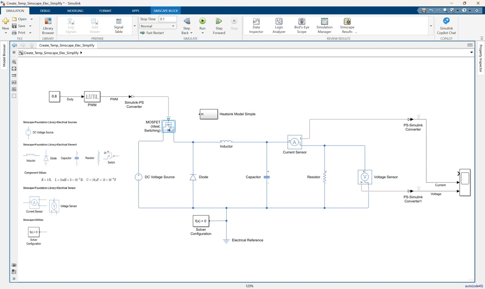
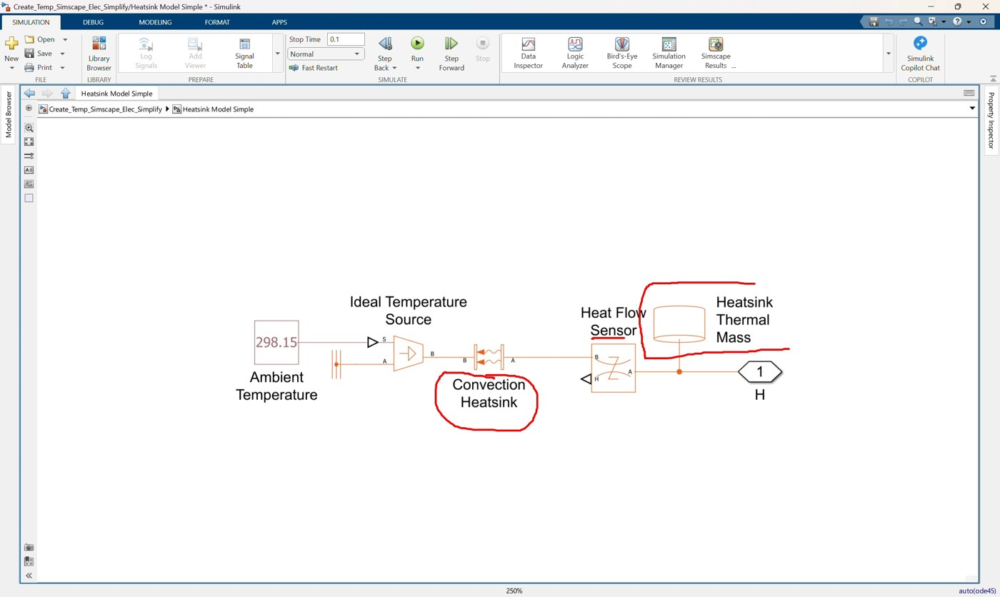
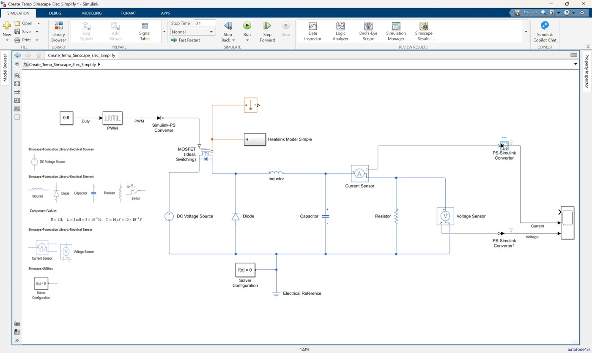
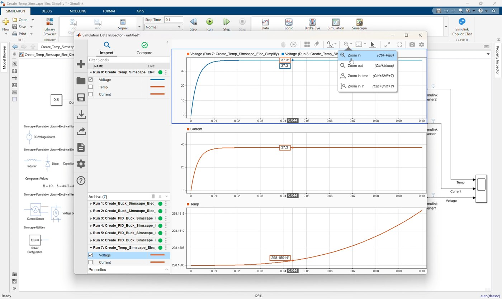
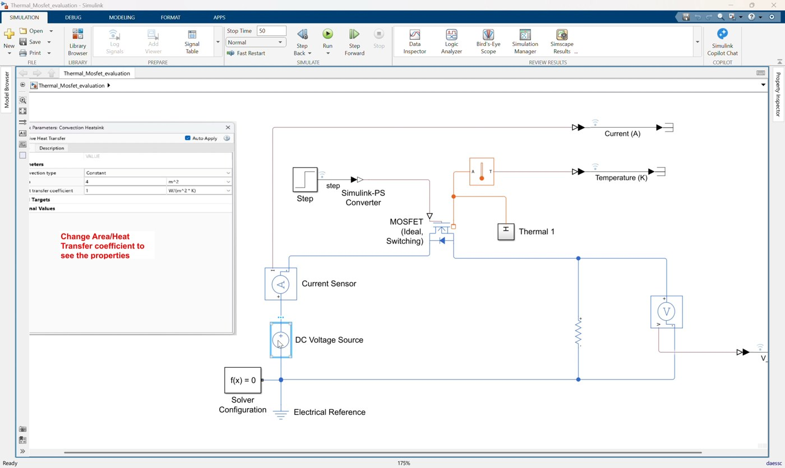
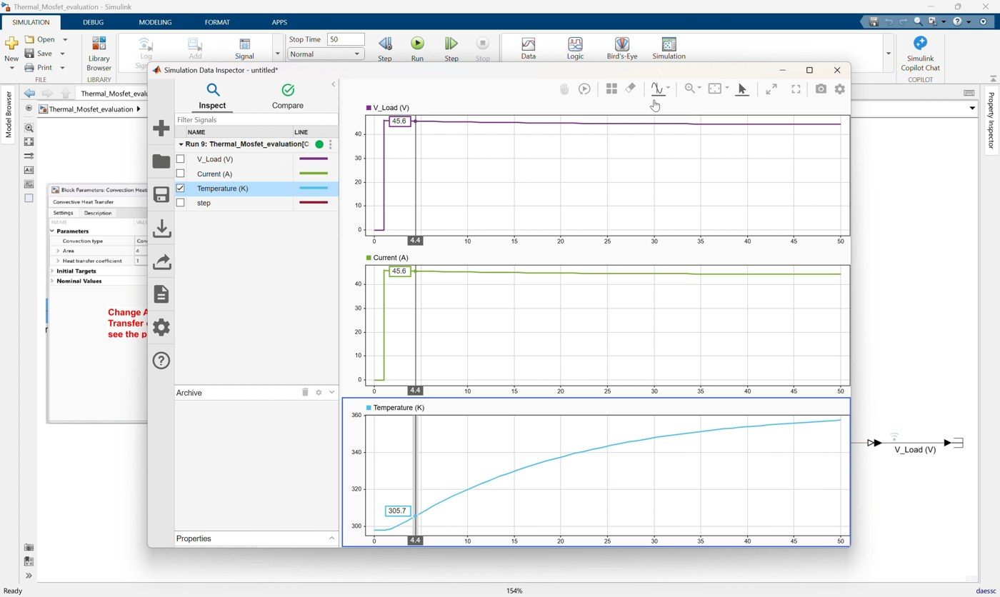
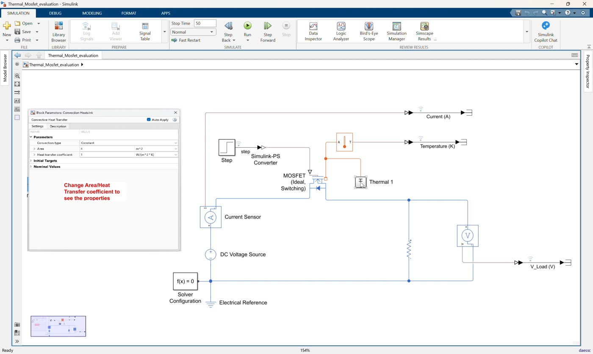
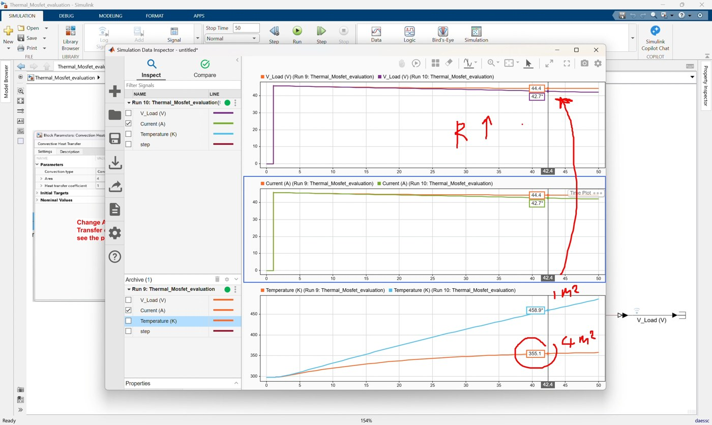

Workshop 02: Add MOSFET Thermal Behavior to the Simplified Buck Converter
Goal
Extend the simplified buck converter model with MOSFET thermal behavior, then use a second evaluation model to show the thermal effect more clearly. This workshop follows the clip 02_Create_Temp_Simscape_Elec_Simplify.mp4.
The clip has two sessions:
- Start from
Create_Temp_Simscape_Elec_Simplify.slxand finish withCreate_Temp_Simscape_Elec_Simplify_finished.slx. - Open
Thermal_Mosfet_evaluation.slxand use it to compare MOSFET temperature behavior when the heatsink convection setting changes.
By the end of this workshop, participants should be able to:
- Enable the thermal port on a Simscape Electrical MOSFET.
- Connect the MOSFET thermal port to a heatsink thermal network.
- Add a temperature sensor and route MOSFET temperature to the Scope.
- Run a coupled electro-thermal simulation.
- Use
Thermal_Mosfet_evaluation.slxto make thermal differences easier to observe.
Prerequisites
- MATLAB with Simulink.
- Simscape.
- Simscape Electrical.
- Completed understanding of Workshop 01 buck converter operation.
Reference Values
Session 1: Thermal Buck Converter
| Item | Value |
|---|---|
| DC input voltage | 50 V |
| Duty cycle | 0.8 |
| PWM period | 1e-5 s |
| Inductor | 3e-3 H |
| Capacitor | 1e-5 F |
| Load resistor | 1 Ohm |
| MOSFET off conductance | 1e-6 1/Ohm |
| MOSFET on resistance | 0.01 Ohm |
| MOSFET thermal network | Junction-case |
| MOSFET thermal mass | [3, 25] J/K |
| Initial MOSFET junction temperature | 25 degC |
| Heatsink convection area | 1 m^2 |
| Heat transfer coefficient | 1 W/(m^2*K) |
| Heatsink mass | 0.01 kg |
| Initial heatsink temperature | 298.15 K |
| Ambient temperature | 298.15 K |
| Simulation stop time | 0.1 s |
Session 2: Thermal Evaluation Model
| Item | Value |
|---|---|
| DC input voltage | 50 V |
| Load resistor | 1 Ohm |
| Step time | 1 s |
| Step initial value | 0 |
| Step final value | 1 |
| Heatsink convection area baseline | 1 m^2 |
| Heat transfer coefficient | 1 W/(m^2*K) |
| Heatsink mass | 0.01 kg |
| Ambient temperature | 298.15 K |
| Simulation stop time | 50 s |
Session 1: Add Thermal Behavior to the Buck Converter
Start from:
Create_Temp_Simscape_Elec_Simplify.slxFinish with:
Create_Temp_Simscape_Elec_Simplify_finished.slxThe starting model already contains the electrical buck converter from Workshop 01. The Scope already has three inputs, but the first Scope input is not connected yet. In this session, that first Scope input is used for MOSFET temperature.
1. Open and review the starting model

Video screenshot: the starting simplified buck converter before adding the MOSFET thermal path.
- Open
Create_Temp_Simscape_Elec_Simplify.slx. - Confirm the electrical buck converter is already complete:
DC Voltage SourceMOSFET (Ideal, Switching)DiodeInductorCapacitorResistorCurrent SensorVoltage SensorPWMSimulink-PS Converter- Two
PS-Simulink Converterblocks ScopeElectrical ReferenceSolver Configuration
- Confirm the model still uses duty cycle
0.8. - Observe that the MOSFET does not yet expose a thermal conserving port.
2. Enable the MOSFET thermal port

*Video screenshot: enabling the MOSFET thermal network so the block exposes thermal port H.*
- Open the block parameters for
MOSFET (Ideal, Switching). - Enable the thermal port or thermal network option.
- Select the junction-case thermal network.
- Confirm the key MOSFET thermal settings:
Thermal network = Junction-case
Thermal mass = [3, 25] J/K
Initial MOSFET junction temperature = 25 degC- Apply the parameter change.
- Confirm the MOSFET block now shows a thermal conserving port
H.
3. Add the heatsink subsystem

*Video screenshot: the Heatsink Model Simple subsystem used for MOSFET heat removal.*
- Add or paste the subsystem
Heatsink Model Simpleinto the model. - Confirm the subsystem has one thermal conserving port named
H. - Connect the MOSFET thermal port
Hto theHeatsink Model Simplethermal port.
The heatsink subsystem represents heat removal from the MOSFET to ambient.
4. Review the heatsink subsystem

Video screenshot: internal thermal blocks inside the heatsink subsystem.
- Open
Heatsink Model Simple. - Confirm the subsystem contains:
Ambient TemperatureConvection HeatsinkHeat Flow SensorHeatsink Thermal MassIdeal Temperature SourceThermal Reference
- Confirm the main parameter values:
Ambient temperature = 298.15 K
Convection area = 1 m^2
Heat transfer coefficient = 1 W/(m^2*K)
Heatsink mass = 0.01 kg
Initial heatsink temperature = 298.15 K- Return to the top level of
Create_Temp_Simscape_Elec_Simplify.slx.
5. Add MOSFET temperature measurement

Video screenshot: temperature measurement routed to the first Scope input.
- Add a
Temperature Sensor. - Connect the sensor thermal port to the same thermal node as the MOSFET thermal port and
Heatsink Model Simple. - Add a
PS-Simulink Converter. - Connect the temperature sensor physical signal output to the new converter.
- Connect the new converter output to Scope input 1.
- Name the signal
Temperature.
Suggested Scope signal order:
Scope input 1: Temperature
Scope input 2: Current
Scope input 3: Voltage6. Configure and run the thermal buck converter

Video screenshot: simulation result after adding MOSFET temperature measurement.
- Set the simulation stop time to:
0.1- Run the model.
- Open the Scope.
- Confirm the Scope shows:
- MOSFET temperature.
- Output current.
- Output voltage.
- Save the completed model.
The result should match the structure of Create_Temp_Simscape_Elec_Simplify_finished.slx.
7. Explain the Session 1 result
Use this model to explain that the same electrical buck converter can be extended with a thermal domain. The MOSFET still works as the switching device, but its losses now create heat flow into the connected heatsink network.
The temperature change in this short 0.1 s buck converter simulation may be small. The second session uses a simpler thermal evaluation model so the thermal effect is easier to see.
Session 2: Use the MOSFET Thermal Evaluation Model
Use this model:
Thermal_Mosfet_evaluation.slxThis model isolates the MOSFET, load, heatsink, and temperature measurement so convection changes produce a clearer thermal response over a longer simulation.
1. Open and review the evaluation model

Video screenshot: the simplified thermal MOSFET evaluation model.
- Open
Thermal_Mosfet_evaluation.slx. - Review the simplified circuit:
DC Voltage Source:50 VCurrent SensorMOSFET (Ideal, Switching)with thermal port enabledResistor:1 OhmVoltage SensorStepgate command through aSimulink-PS ConverterTemperature SensorThermal 1heatsink subsystem
- Confirm the Step block uses:
Step time = 1 s
Initial value = 0
Final value = 1- Confirm the simulation stop time is:
502. Inspect the Thermal 1 subsystem
- Open the subsystem
Thermal 1. - Locate the
Convection Heatsinkblock. - Confirm the baseline settings:
Convection area = 1 m^2
Heat transfer coefficient = 1 W/(m^2*K)- Confirm the heatsink thermal mass settings:
Heatsink mass = 0.01 kg
Initial heatsink temperature = 298.15 K- Return to the top level.
3. Run the baseline case

*Video screenshot: baseline thermal evaluation run with convection area at 1 m^2.*
- Keep the convection area at
1 m^2. - Run the simulation.
- Inspect the logged results for:
Temperature (K)Current (A)V_Load (V)
- Use the baseline case as the reference cooling condition.
4. Increase the convection area

Video screenshot: changing the convection area for the improved cooling case.
- Open
Thermal 1. - Open
Convection Heatsink. - Change the convection area from the baseline value to:
Convection area = 4 m^2- Run the simulation again.
- Compare the temperature response with the baseline case.
Expected observation:
- Larger convection area removes heat more effectively.
- MOSFET temperature rises less or settles at a lower value.
- The thermal effect is easier to see than in the short buck converter simulation.
5. Compare the two thermal cases

*Video screenshot: comparison between the 1 m^2 and 4 m^2 convection-area runs.*
Use the evaluation model to compare:
| Case | Convection Area | Expected Temperature Behavior |
|---|---|---|
| Baseline cooling | 1 m^2 | Higher temperature rise |
| Improved cooling | 4 m^2 | Lower temperature rise |
The exact temperature values depend on model settings and solver behavior. The important concept is the trend: stronger convection produces better cooling.
Suggested Instructor Flow
- Open
Create_Temp_Simscape_Elec_Simplify.slx. - Point out that the electrical buck converter is already complete.
- Enable the MOSFET thermal port and explain the new thermal conserving port.
- Add
Heatsink Model Simpleand connect it to the MOSFET thermal port. - Add the
Temperature Sensorand route temperature to Scope input 1. - Run the model and show that electrical and thermal behavior now simulate together.
- Open
Thermal_Mosfet_evaluation.slx. - Run the baseline case.
- Change the
Convection Heatsinkarea and compare the temperature response. - Close by explaining that thermal parameters such as convection area, heat transfer coefficient, heatsink mass, and ambient temperature can be changed directly in the physical model.
Participant Exercise
Ask participants to run two cases in Thermal_Mosfet_evaluation.slx:
| Case | Convection Area |
|---|---|
| Baseline cooling | 1 m^2 |
| Improved cooling | 4 m^2 |
For each case, record:
- Final MOSFET temperature.
- Peak MOSFET temperature.
- Whether the temperature rises quickly or slowly.
Then ask:
Which convection area gives the lowest MOSFET temperature?
Why does increasing convection area improve cooling?Troubleshooting
| Symptom | Likely Cause | Fix |
|---|---|---|
| MOSFET has no thermal port | Thermal port option is not enabled | Open MOSFET parameters and enable the thermal network/thermal port |
| Thermal network error | Heatsink subsystem is disconnected or missing thermal reference | Check Heatsink Model Simple or Thermal 1 connections |
| Scope input 1 is empty | Temperature converter is not connected | Connect Temperature Sensor to PS-Simulink Converter2, then to Scope input 1 |
| Temperature changes very little in Session 1 | Buck converter simulation is short | Use Thermal_Mosfet_evaluation.slx for a clearer 50-second thermal comparison |
| Results do not clearly differ in Session 2 | Convection area was not changed or the wrong run is being inspected | Compare the baseline 1 m^2 run with the updated 4 m^2 run |
Reference Model Check
Session 1 completed model should include this added thermal path:
MOSFET thermal port H -> Heatsink Model Simple
MOSFET thermal node -> Temperature Sensor -> PS-Simulink Converter -> Scope input 1
Existing Current Sensor -> PS-Simulink Converter -> Scope input 2
Existing Voltage Sensor -> PS-Simulink Converter -> Scope input 3Session 2 evaluation model should support this comparison:
Step -> Simulink-PS Converter -> MOSFET gate
DC Voltage Source -> Current Sensor -> MOSFET -> Resistor -> Electrical Reference
MOSFET thermal port -> Thermal 1 subsystem
MOSFET thermal node -> Temperature Sensor -> PS-Simulink Converter
Change Thermal 1 / Convection Heatsink / area to compare cooling behavior